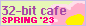
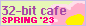

🌸 32-bit cafe spring '23 event 🌸
your submission has been sent! thank you for participating!
for your participation, feel free to add this to your site linking back to the page: 
your submission has been sent! thank you for participating!
for your participation, feel free to add this to your site linking back to the page: 